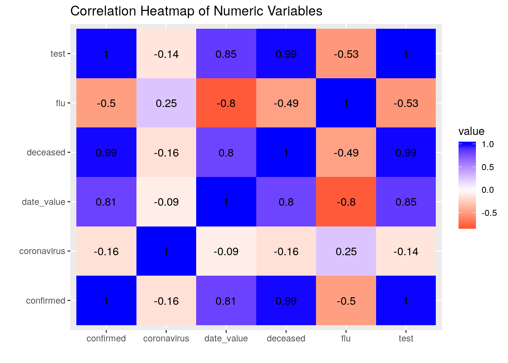
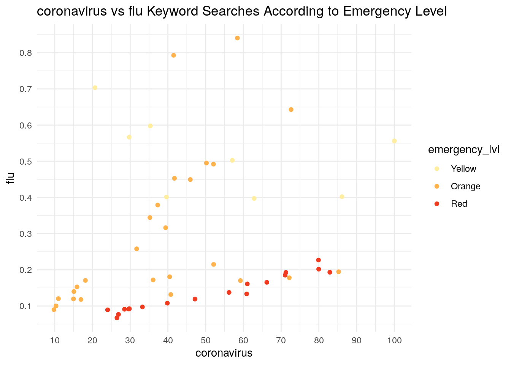
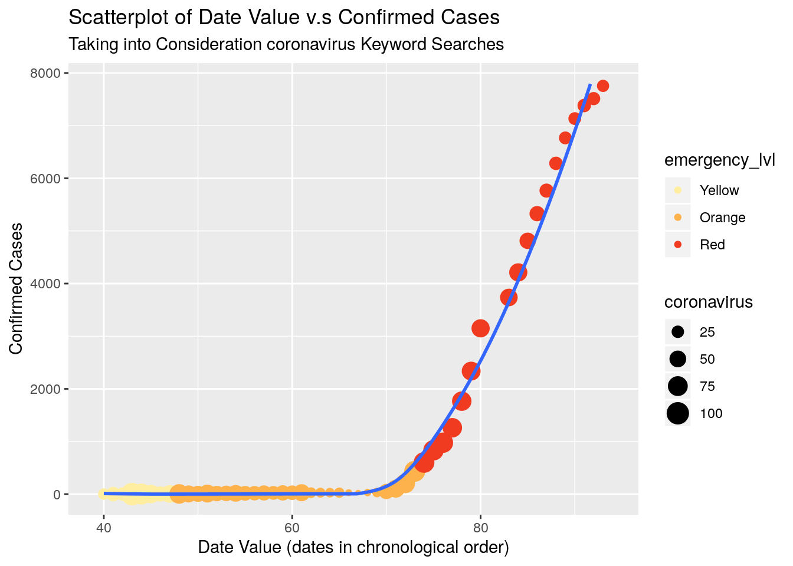
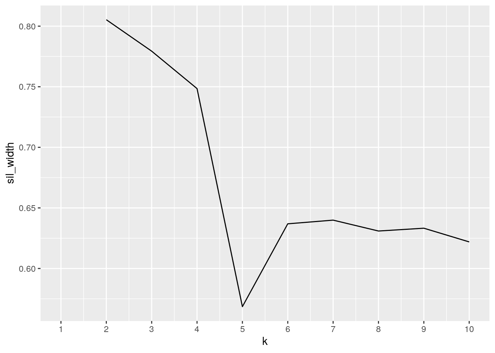
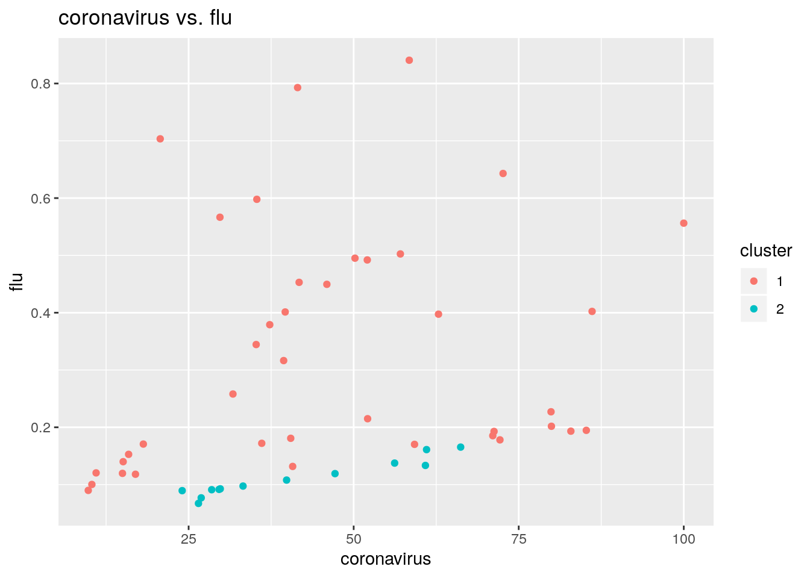
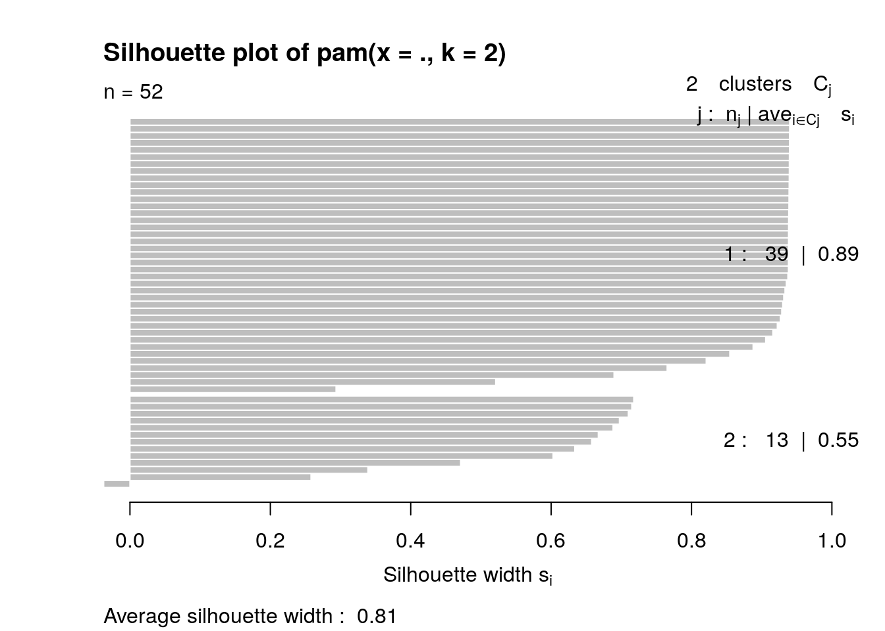
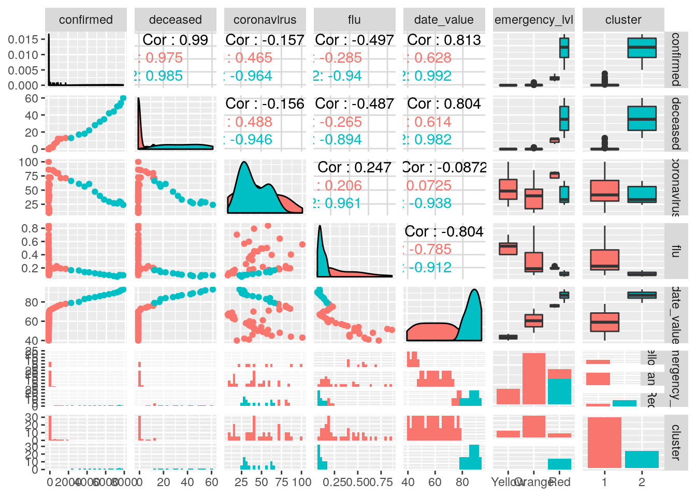

# Data sets
library(dplyr)
library(ggplot2)
library(tidyr)
library(tibble)
install.packages("cluster")
library(cluster)
library(tidyverse)
install.packages("fivethirtyeight")
library(fivethirtyeight)
data()
# setup working directory and read files
setwd("~/Elizabeth Oh/Homework/")
time <- read.csv(file = "time.csv")
trend <- read.csv(file = "trend.csv")
glimpse(time)## Observations: 53
## Variables: 24
## $ date <fct> 2020-01-20, 2020-01-21, 2020-01-22, 2020-01-23, 202…
## $ time <int> 16, 16, 16, 16, 16, 16, 16, 16, 16, 16, 16, 16, 16,…
## $ test <int> 1, 1, 4, 22, 27, 27, 51, 61, 116, 187, 246, 312, 37…
## $ negative <int> 0, 0, 3, 21, 25, 25, 47, 56, 97, 155, 199, 245, 289…
## $ confirmed <int> 1, 1, 1, 1, 2, 2, 3, 4, 4, 4, 6, 11, 12, 15, 15, 16…
## $ released <int> 0, 0, 0, 0, 0, 0, 0, 0, 0, 0, 0, 0, 0, 0, 0, 0, 1, …
## $ deceased <int> 0, 0, 0, 0, 0, 0, 0, 0, 0, 0, 0, 0, 0, 0, 0, 0, 0, …
## $ Seoul <int> 0, 0, 0, 0, 0, 0, 0, 1, 1, 1, 3, 4, 4, 5, 5, 5, 5, …
## $ Busan <int> 0, 0, 0, 0, 0, 0, 0, 0, 0, 0, 0, 0, 0, 0, 0, 0, 0, …
## $ Daegu <int> 0, 0, 0, 0, 0, 0, 0, 0, 0, 0, 0, 0, 0, 0, 0, 0, 0, …
## $ Incheon <int> 1, 1, 1, 1, 1, 1, 1, 1, 1, 1, 1, 1, 1, 1, 1, 1, 1, …
## $ Gwangju <int> 0, 0, 0, 0, 0, 0, 0, 0, 0, 0, 0, 0, 0, 0, 0, 1, 1, …
## $ Daejeon <int> 0, 0, 0, 0, 0, 0, 0, 0, 0, 0, 0, 0, 0, 0, 0, 0, 0, …
## $ Ulsan <int> 0, 0, 0, 0, 0, 0, 0, 0, 0, 0, 0, 0, 0, 0, 0, 0, 0, …
## $ Sejong <int> 0, 0, 0, 0, 0, 0, 0, 0, 0, 0, 0, 0, 0, 0, 0, 0, 0, …
## $ Gyeonggi.do <int> 0, 0, 0, 0, 1, 1, 2, 2, 2, 2, 3, 5, 6, 8, 8, 8, 10,…
## $ Gangwon.do <int> 0, 0, 0, 0, 0, 0, 0, 0, 0, 0, 0, 0, 0, 0, 0, 0, 0, …
## $ Chungcheongbuk.do <int> 0, 0, 0, 0, 0, 0, 0, 0, 0, 0, 0, 0, 0, 0, 0, 0, 0, …
## $ Chungcheongnam.do <int> 0, 0, 0, 0, 0, 0, 0, 0, 0, 0, 0, 0, 0, 0, 0, 0, 0, …
## $ Jeollabuk.do <int> 0, 0, 0, 0, 0, 0, 0, 0, 0, 0, 0, 1, 1, 1, 1, 1, 1, …
## $ Jeollanam.do <int> 0, 0, 0, 0, 0, 0, 0, 0, 0, 0, 0, 0, 0, 0, 0, 0, 0, …
## $ Gyeongsangbuk.do <int> 0, 0, 0, 0, 0, 0, 0, 0, 0, 0, 0, 0, 0, 0, 0, 0, 0, …
## $ Gyeongsangnam.do <int> 0, 0, 0, 0, 0, 0, 0, 0, 0, 0, 0, 0, 0, 0, 0, 0, 0, …
## $ Jeju.do <int> 0, 0, 0, 0, 0, 0, 0, 0, 0, 0, 0, 0, 0, 0, 0, 0, 0, …glimpse(trend)## Observations: 96
## Variables: 5
## $ date <fct> 2019-12-07, 2019-12-08, 2019-12-09, 2019-12-10, 2019-12-1…
## $ cold <dbl> 0.12408, 0.11863, 0.16308, 0.13981, 0.13972, 0.13954, 0.1…
## $ flu <dbl> 0.24699, 0.25390, 0.47880, 0.40789, 0.39007, 0.38226, 0.4…
## $ pneumonia <dbl> 0.22144, 0.19617, 0.33180, 0.30671, 0.30299, 0.30526, 0.2…
## $ coronavirus <dbl> 0.01309, 0.00836, 0.01272, 0.01881, 0.01854, 0.01990, 0.0…The two datasets I chose were from the website https://www.kaggle.com/kimjihoo/coronavirusdataset#trend.csv. This website provided data concerning coronavirus, its spread, and naver searches related to coronavirus organized by date. I extracted two datasets from the several options. The first dataset contained date organized data about the number of cases in Korea while the second contained date organized data on Naver searches (Korea’s equivilant to Google) related to COVID-19 and its symptoms. I chose to these datasets because I was interested in seeing the correlation between realtime data of cases in Korea and the public reaction and relative panic about the situation.
There are 24 variables in the dataset “time”. Important variables from this dataset include “date” which records which date the rest of the data was collected,“test” representing the accumulated number of COVID-19 tests given so far, “confirmed” representing the accumulated number or confirmed cases, and “deceased” representing the accumulated number of deceased due to the disease. There are 5 variables in the dataset “trend”. Important variables from this dataset include “date” which allows us to join the two datasets,“coronavirus” representing the proportion of searches on naver including the word coronavirus, and “flu” representing the proportion of searches on naver including the word flu.
I will be joining these datasets to compare data and visualize the data. I am expecting to see a correlations between the spread of coronavirus in Korea and the public reaction of searching for coronavirus on Naver. However, I am unsure of how it will compare to the search of flu in this period of time as well.
# demonstrating use of pivot
time_longer <- time %>% pivot_longer(c("Seoul", "Busan", "Daegu",
"Incheon", "Gwangju", "Daejeon", "Ulsan", "Sejong", "Gyeonggi.do",
"Gangwon.do", "Chungcheongbuk.do", "Chungcheongnam.do", "Jeollabuk.do",
"Jeollanam.do", "Gyeongsangbuk.do", "Gyeongsangnam.do", "Jeju.do"),
names_to = "location", values_to = "region_confirmed")
head(time_longer)## # A tibble: 6 x 9
## date time test negative confirmed released deceased location
## <fct> <int> <int> <int> <int> <int> <int> <chr>
## 1 2020… 16 1 0 1 0 0 Seoul
## 2 2020… 16 1 0 1 0 0 Busan
## 3 2020… 16 1 0 1 0 0 Daegu
## 4 2020… 16 1 0 1 0 0 Incheon
## 5 2020… 16 1 0 1 0 0 Gwangju
## 6 2020… 16 1 0 1 0 0 Daejeon
## # … with 1 more variable: region_confirmed <int>time_wider <- time_longer %>% pivot_wider(names_from = "location",
values_from = "region_confirmed")
head(time_wider)## # A tibble: 6 x 24
## date time test negative confirmed released deceased Seoul Busan Daegu
## <fct> <int> <int> <int> <int> <int> <int> <int> <int> <int>
## 1 2020… 16 1 0 1 0 0 0 0 0
## 2 2020… 16 1 0 1 0 0 0 0 0
## 3 2020… 16 4 3 1 0 0 0 0 0
## 4 2020… 16 22 21 1 0 0 0 0 0
## 5 2020… 16 27 25 2 0 0 0 0 0
## 6 2020… 16 27 25 2 0 0 0 0 0
## # … with 14 more variables: Incheon <int>, Gwangju <int>, Daejeon <int>,
## # Ulsan <int>, Sejong <int>, Gyeonggi.do <int>, Gangwon.do <int>,
## # Chungcheongbuk.do <int>, Chungcheongnam.do <int>, Jeollabuk.do <int>,
## # Jeollanam.do <int>, Gyeongsangbuk.do <int>, Gyeongsangnam.do <int>,
## # Jeju.do <int>Becaue my datasets were already tidy, I demonstrated my ability to use pivot_longer() on the dataset time and saved it into the dataset “time_longer”. This made the dataset awkward to use with the dataset “trend”“, so I tidied it into”time_wider“, bringing each date’s data into one row, by using pivot_wider().
corona_kr <- full_join(time, trend)
glimpse(corona_kr)## Observations: 97
## Variables: 28
## $ date <chr> "2020-01-20", "2020-01-21", "2020-01-22", "2020-01-…
## $ time <int> 16, 16, 16, 16, 16, 16, 16, 16, 16, 16, 16, 16, 16,…
## $ test <int> 1, 1, 4, 22, 27, 27, 51, 61, 116, 187, 246, 312, 37…
## $ negative <int> 0, 0, 3, 21, 25, 25, 47, 56, 97, 155, 199, 245, 289…
## $ confirmed <int> 1, 1, 1, 1, 2, 2, 3, 4, 4, 4, 6, 11, 12, 15, 15, 16…
## $ released <int> 0, 0, 0, 0, 0, 0, 0, 0, 0, 0, 0, 0, 0, 0, 0, 0, 1, …
## $ deceased <int> 0, 0, 0, 0, 0, 0, 0, 0, 0, 0, 0, 0, 0, 0, 0, 0, 0, …
## $ Seoul <int> 0, 0, 0, 0, 0, 0, 0, 1, 1, 1, 3, 4, 4, 5, 5, 5, 5, …
## $ Busan <int> 0, 0, 0, 0, 0, 0, 0, 0, 0, 0, 0, 0, 0, 0, 0, 0, 0, …
## $ Daegu <int> 0, 0, 0, 0, 0, 0, 0, 0, 0, 0, 0, 0, 0, 0, 0, 0, 0, …
## $ Incheon <int> 1, 1, 1, 1, 1, 1, 1, 1, 1, 1, 1, 1, 1, 1, 1, 1, 1, …
## $ Gwangju <int> 0, 0, 0, 0, 0, 0, 0, 0, 0, 0, 0, 0, 0, 0, 0, 1, 1, …
## $ Daejeon <int> 0, 0, 0, 0, 0, 0, 0, 0, 0, 0, 0, 0, 0, 0, 0, 0, 0, …
## $ Ulsan <int> 0, 0, 0, 0, 0, 0, 0, 0, 0, 0, 0, 0, 0, 0, 0, 0, 0, …
## $ Sejong <int> 0, 0, 0, 0, 0, 0, 0, 0, 0, 0, 0, 0, 0, 0, 0, 0, 0, …
## $ Gyeonggi.do <int> 0, 0, 0, 0, 1, 1, 2, 2, 2, 2, 3, 5, 6, 8, 8, 8, 10,…
## $ Gangwon.do <int> 0, 0, 0, 0, 0, 0, 0, 0, 0, 0, 0, 0, 0, 0, 0, 0, 0, …
## $ Chungcheongbuk.do <int> 0, 0, 0, 0, 0, 0, 0, 0, 0, 0, 0, 0, 0, 0, 0, 0, 0, …
## $ Chungcheongnam.do <int> 0, 0, 0, 0, 0, 0, 0, 0, 0, 0, 0, 0, 0, 0, 0, 0, 0, …
## $ Jeollabuk.do <int> 0, 0, 0, 0, 0, 0, 0, 0, 0, 0, 0, 1, 1, 1, 1, 1, 1, …
## $ Jeollanam.do <int> 0, 0, 0, 0, 0, 0, 0, 0, 0, 0, 0, 0, 0, 0, 0, 0, 0, …
## $ Gyeongsangbuk.do <int> 0, 0, 0, 0, 0, 0, 0, 0, 0, 0, 0, 0, 0, 0, 0, 0, 0, …
## $ Gyeongsangnam.do <int> 0, 0, 0, 0, 0, 0, 0, 0, 0, 0, 0, 0, 0, 0, 0, 0, 0, …
## $ Jeju.do <int> 0, 0, 0, 0, 0, 0, 0, 0, 0, 0, 0, 0, 0, 0, 0, 0, 0, …
## $ cold <dbl> 0.19217, 0.22462, 0.23808, 0.30308, 0.34689, 0.7088…
## $ flu <dbl> 0.70343, 0.59789, 0.56661, 0.55625, 0.40226, 0.3974…
## $ pneumonia <dbl> 3.63716, 4.31987, 3.66416, 3.18035, 2.48156, 3.4092…
## $ coronavirus <dbl> 20.69610, 35.33284, 29.74474, 100.00000, 86.11541, …I used a full join because both datasets shared the variable “date”. This brought my joined dataset to a wopping 97 observations and I saved this as “corona_kr”.
# select()
corona_kr <- corona_kr %>% select(date, test, confirmed, deceased,
coronavirus, flu)
glimpse(corona_kr)## Observations: 97
## Variables: 6
## $ date <chr> "2020-01-20", "2020-01-21", "2020-01-22", "2020-01-23", "…
## $ test <int> 1, 1, 4, 22, 27, 27, 51, 61, 116, 187, 246, 312, 371, 429…
## $ confirmed <int> 1, 1, 1, 1, 2, 2, 3, 4, 4, 4, 6, 11, 12, 15, 15, 16, 18, …
## $ deceased <int> 0, 0, 0, 0, 0, 0, 0, 0, 0, 0, 0, 0, 0, 0, 0, 0, 0, 0, 0, …
## $ coronavirus <dbl> 20.69610, 35.33284, 29.74474, 100.00000, 86.11541, 62.848…
## $ flu <dbl> 0.70343, 0.59789, 0.56661, 0.55625, 0.40226, 0.39744, 0.4…# filter()
corona_kr <- corona_kr %>% filter(complete.cases(corona_kr))
glimpse(corona_kr)## Observations: 52
## Variables: 6
## $ date <chr> "2020-01-20", "2020-01-21", "2020-01-22", "2020-01-23", "…
## $ test <int> 1, 1, 4, 22, 27, 27, 51, 61, 116, 187, 246, 312, 371, 429…
## $ confirmed <int> 1, 1, 1, 1, 2, 2, 3, 4, 4, 4, 6, 11, 12, 15, 15, 16, 18, …
## $ deceased <int> 0, 0, 0, 0, 0, 0, 0, 0, 0, 0, 0, 0, 0, 0, 0, 0, 0, 0, 0, …
## $ coronavirus <dbl> 20.69610, 35.33284, 29.74474, 100.00000, 86.11541, 62.848…
## $ flu <dbl> 0.70343, 0.59789, 0.56661, 0.55625, 0.40226, 0.39744, 0.4…# arrange()
corona_kr <- corona_kr %>% arrange(desc(coronavirus))
glimpse(corona_kr)## Observations: 52
## Variables: 6
## $ date <chr> "2020-01-23", "2020-01-24", "2020-02-22", "2020-02-23", "…
## $ test <int> 22, 27, 21586, 26179, 40304, 32756, 116, 16400, 53553, 66…
## $ confirmed <int> 1, 2, 433, 602, 977, 833, 4, 204, 1261, 1766, 2337, 2, 31…
## $ deceased <int> 0, 0, 2, 6, 12, 8, 0, 2, 12, 13, 13, 0, 17, 22, 1, 0, 0, …
## $ coronavirus <dbl> 100.00000, 86.11541, 85.23907, 82.90014, 79.95441, 79.894…
## $ flu <dbl> 0.55625, 0.40226, 0.19472, 0.19326, 0.20181, 0.22708, 0.6…corona_kr <- corona_kr %>% arrange(date)
# mutate()
corona_kr <- corona_kr %>% separate(date, c("year", "month",
"day"))
corona_kr <- corona_kr %>% mutate(`:=`(date_value, (20 + ((as.integer(month) -
1) * 31) + as.integer(day))))
corona_kr <- corona_kr %>% mutate(emergency_lvl = cut(date_value,
breaks = c(39, 47, 73, 93), labels = c("Yellow", "Orange",
"Red")))
# group_by() and summarize()
summary_corona <- corona_kr %>% group_by(emergency_lvl) %>% summarize(sd = sd(coronavirus),
mean = mean(coronavirus), median = median(coronavirus), max = max(coronavirus),
min = min(coronavirus), quan = quantile(coronavirus, 0.85),
var = var(coronavirus), n_dist = n_distinct(coronavirus),
n(), cor_test = cor(coronavirus, test), cor_confirmed = cor(coronavirus,
confirmed), cor_deceased = cor(coronavirus, deceased),
mad = mad(coronavirus))
view(summary_corona)
summary_flu <- corona_kr %>% group_by(emergency_lvl) %>% summarize(sd = sd(flu),
mean = mean(flu), median = median(flu), max = max(flu), min = min(flu),
quan = quantile(flu, 0.85), var = var(flu), n_dist = n_distinct(flu),
n(), cor_test = cor(flu, test), cor_confirmed = cor(flu,
confirmed), cor_deceased = cor(flu, deceased), mad = mad(flu))
view(summary_flu)I used the core dplyr functions select, filter, arrange, group_by, mutate, and summarize on “corona_kr” to generate summary statistics.
I used select() to remove extraneous variables I would not be comparing, as to make the huge dataset less unweildy. This brought my number of total variables down to 6.
I used filter() to remove rows with NA values that appeared because the timelines of the datasets were not completely matched up. For the purposes of this project, I planned to compare the values of COVID-19 case data in Korea and the percentage of corona related keywords in Naver searches over time. So, I chose to drop the dates in which there were NA values due to the unmatched timelines. This brought the number of observations down to 52.
I used arrange() to arrange the data by descending coronavirus search proportions. But, because it made more sense to view data chronologically, I rearranged it so that I could see the data over time.
I used mutate() to create a new variable indicating the level of emergency Korea announced at each day. This was done by looking up which days Korea announced increasing levels through the web. They had announced a “Yellow” level of emergency on January 3rd, an “Orange” level of emergency on January 28th, and a “Red” level of emergency on February 23rd. This was hard to mutate and took several steps because the date variable was not in a numeric form to allow for cutting. So, I separated the date, month, and year, and then created a defining “date_value” by adding up the day, 20,and 30 times the one minus the month. This means that for each date, there was a unique numeric value all in ascending order chronologically. Then, I was able to cut the values at the correct dates and label them as the appropriate levels of emergency. This creation of a new non numeric value
I used group() and summarize() to compute 10 different summary statistics including sd, mean, med, max, min, quantile, var, n_distinct, cor (to test, confirmed, and deceased), median, and mad. I had 6 numeric variables and one non numeric variable, so I grouped all summary stats by the non numeric variable “emergency_lvl”. Then I chose to take the Naver searches and find summary stats on them as these were the “dependent variables”. I ran correlation stats against all three“independent variables” of people tested, confirmed, and deceased in respect to the coronavirus. I chose to do this because I thought it would show me an accurate picture of how the frequency of certain corona related Naver searches changed based on the level of emergency and realtime facts about the disease that was accessible to the public at that time.
By doing all this, it was interesting to see that the frequency keyword “coronavirus” was high when it was first found in Korea, then interest seemed to wind down, but when severe (“Red”) state of emergency was announced interest and thus, keyword searches went back up. For the keyword “flu”, the proportional frequency of these Naver searches steadily decreased as time passed by. It was also facinating to see that “coronavirus” keyword searches were actually weakly negatively correlated to the amount of testing, confirmed, and deceased cases occured when in the “Red” emergency level. The data for coronavirus cases actually seemed to only have an impact nearer to when the first case of COVID-19 appeared in Korea.
library(ggplot2)
corona_kr %>% select_if(is.numeric) %>% cor %>% as.data.frame %>%
rownames_to_column %>% pivot_longer(-1) %>% ggplot(aes(rowname,
name, fill = value)) + geom_tile() + geom_text(aes(label = round(value,
2))) + xlab("") + ylab("") + scale_fill_gradient2(low = "red",
high = "blue") + ggtitle("Correlation Heatmap of Numeric Variables")
This is a correlation heatmap of my numeric variables. From this, we can see an strong correlations between all the variables of test, confirmed, deceased, and date_value. This is expected because the longer COVID-19 had been spreading in Korea, there was a response of more testing, and with more testing there was more confirmed cases, and also unfortunately more deaths. What is interesting is that the proportion of keyword “coronavirus” searches are actually weakly negatively correlated to the the progression of time and cases found in the country. This may indicate that perhaps there was a strong reaction to the introduction of COVID-19 to Korea, and interest since then has died down, or people had learned enough of what they wanted to know in the beginning weeks. In addition, the proportion of the keyword “flu” searches were more strongly negatively correlated to the progression of COVID-19 in Korea. This may indicate that as COVID-19 became more relevant, the flu became less of a concern to the general public in comparison.
ggplot(corona_kr, aes(coronavirus, flu)) + geom_point(aes(color = emergency_lvl)) +
ggtitle("coronavirus vs flu Keyword Searches According to Emergency Level") +
theme_minimal() + scale_color_brewer(palette = "YlOrRd") +
scale_x_continuous(breaks = scales::pretty_breaks(n = 10)) +
scale_y_continuous(breaks = scales::pretty_breaks(n = 10))
This is a scatter plot of “coronavirus”" vs “flu”" Keyword Searches According to Emergency Level. From this graph we can see that for “Orange” and “Red” emergency levels, there are positive linear relationships between the two keyword searches. However, for the “Yellow” emergency level there is almost no linear relationship or correlation at all. It also shows that the more severe the virus’ spread in Korea became, the higher the correlation between coronavirus and flu became. However, I can also see that the more severe the emergency level, the lower the overall proportion of “flu” keyword searches there were. Also, interestingly, the keyword “coronavirus” had the lowest overal proportion of searches during the “Orange” emergency level.
ggplot(corona_kr, aes(x = date_value, y = confirmed)) + geom_point(aes(col = emergency_lvl,
size = coronavirus)) + geom_smooth(method = "loess", se = F) +
xlim(c(39, 94)) + ylim(c(0, 7800)) + labs(subtitle = "Taking into Consideration coronavirus Keyword Searches",
y = "Confirmed Cases", x = "Date Value (dates in chronological order)",
title = "Scatterplot of Date Value v.s Confirmed Cases") +
scale_color_brewer(palette = "YlOrRd")
This is a scatterplot of Confirmed Cases over time where we are able to see the trendline of cases and also are able to consider the proportion of “coronavirus” keyword searches at those points as well. We are able to clearly see that the cases of coronaviruses were contained well into the “Orange” emergency level. However, the number of confirmed cases increased exponentially and Korea was soon announced to be in the “Red” emergency level. Also, we can see that interest in searching for “coronavirus” on naver increased in the “Yellow” emergency level, then decreased in the “Orange” emergency level, and then increased again as the population approached “Red” emergency level. At the end of the “Red” emergency level, interest died down again and also, the situation stabilized as the amount of confirmed cases began to slow down.
pam2 <- corona_kr %>% select(-coronavirus, -flu) %>% pam(2)
sil_width <- vector()
for (i in 2:10) {
pam_fit <- corona_kr %>% select(-coronavirus, -flu) %>% pam(i)
sil_width[i] <- pam_fit$silinfo$avg.width
}
pam_fit$silinfo$avg.width## [1] 0.6219349ggplot() + geom_line(aes(x = 1:10, y = sil_width)) + scale_x_continuous(name = "k",
breaks = 1:10)
pamfinish <- corona_kr %>% mutate(cluster = as.factor(pam2$clustering))
confmat <- pamfinish %>% group_by(coronavirus, flu) %>% count(cluster) %>%
arrange(desc(n)) %>% pivot_wider(names_from = "cluster",
values_from = "n", values_fill = list(n = 0))
confmat## # A tibble: 52 x 4
## # Groups: coronavirus, flu [52]
## coronavirus flu `1` `2`
## <dbl> <dbl> <int> <int>
## 1 9.80 0.0899 1 0
## 2 10.3 0.100 1 0
## 3 11.0 0.120 1 0
## 4 15.0 0.120 1 0
## 5 15.1 0.140 1 0
## 6 15.9 0.153 1 0
## 7 16.9 0.118 1 0
## 8 18.1 0.171 1 0
## 9 20.7 0.703 1 0
## 10 24.0 0.0894 0 1
## # … with 42 more rowsggplot(pamfinish, aes(x = coronavirus, y = flu, color = cluster)) +
ggtitle("coronavirus vs. flu") + geom_point()
plot(pam2, which = 2)
library(GGally)
ggpairs(pamfinish, columns = 5:11, aes(color = cluster)) Because the highest value on my sil_width graph was 2, I chose to use 2 clusters. My average silhouette width was found to be .62 according to the silhouette plot. Using ggpairs() I was able to visualize all pariwise combinations of the 7 numeric values. Correlation between the deceased and confirmed was strongest with a nearly linear correlation. This made sense because the more cases we have, the more deaths we would have according to the fatality rate of COVID-19 in Korea. From this data it seems that the keywords “coronavirus” was searched with not much correlation to the number of cases, deaths, and heightening emergency level. Instead, It correlated more so with keyword searches of “flu” in general. Due to this, believe that the proportion of keyword searches pertaining to COVID-19 on Naver was probably more related to key events, articles, and news reports made by the Korean government and media over this time period.